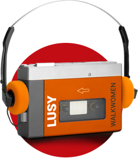
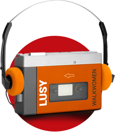

БАЛЛАДЫ
Секта «Одиночество»
куплет
К Богу одинокая пришла звезда,
Спросила: «Что со мной,
И где она – моя планета?»
Так же одиноки в жизни мы с тобой.
Но на вопрос звезде не получить ответа.
В глаженых костюмах, c книжками в руках
И в рясах, и платках –
Одеждах лжепророков,
Сети расставляют секты на людей,
Пугая, как детей, расплатою жестокой.
припев
Завтра мы, давай, поверим в рай,
А послезавтра он
Для нас с тобою адом станет.
Страшен мир, где выхода нет.
Хочешь жить свободно?
Просто знай,
Свобода – ад (Dm) для одиноких,
Если их не примут в рай.
куплет
На свиданье к месяцу взошла звезда,
Не зная, скоро он луною голубою будет.
Здесь уже любовь не встретим никогда.
К несбывшимся мечтам пойдут другие люди.
Рассыпаясь, лягут под кресты цветы,
А траурным венкам здесь место есть?.. Едва ли.
Нас проводят те, с кем были мы «на ты».
И среди них придут те, кто всю жизнь нас ждали.
припев
Завтра мы, давай, поверим в рай,
А послезавтра он
Для нас с тобою адом станет.
Страшен мир, но выхода нет.
Радуйся свободе,
Только знай,
Свобода, это тот порок,
С которым не пускают в рай.
Листья
куплет
Облетевшим листьям безразлична участь их
деревьев,
Им уже не важно, что сгниёт, а кто истлеет.
Ветер их уносит в небытиё и стелет по земле.
Умершим солдатам безразлично окончанье боя.
Умершему чувству безразлично, что теперь
с тобою.
Только иногда приходит боль, напоминая о тебе.
выход на припев
И только сон унесет эту боль, мне вернув мир,
где ты,
Там, где казалось, что сбываются и в жизни
мечты.
припев
Мне бы ненавидеть всё, что живёт тобой,
Помнит цвет твоих глаз и улыбки обман,
Словно слышу я твой голос, и, как живой,
Он ведет за собою и сводит с ума.
куплет
Как мы одиноки в этом мире без надежды,
Отравляет ложь в нас чистые мечты. И нежность,
Словно, с якоря сорвавшийся корабль,
уносит по волнам.
Осень в нас остудит, что еще не догорело.
Огласит последний приговор судья:
«Кому до вас
есть дело?»
Нет следов, где были ты и я, их потерял я сам.
выход на припев
И только сон унесет эту боль, мир вернув,
где есть ты,
Там, где казалось, что сбываются и в жизни
мечты.
припев
Мне бы ненавидеть всё, что живёт тобой,
Помнит цвет твоих глаз и улыбки обман,
Словно слышу я твой голос, и как живой,
Он ведет за собою и сводит с ума.
Физика
куплет
Вряд ли нам встретить чистую любовь.
Остался лишь её прощальный свет.
Как была она нужна, но теперь остыла кровь,
А места, где согреться, больше нет.
припев
Ты центробежной силой назовёшь
То чувство, что так отдаляло нас.
Сбежишь ты или медленно уйдёшь,
При чём здесь эта Физика сейчас?
куплет
Вот и всё, наших нот исписан лист.
И больше не сыграет пианист.
Страшным сном ту картину назовём,
Которую порвали мы вдвоём.
припев
Остался её маленький клочок.
На память я возьму его себе.
Как рыбам, заглотившим свой крючок,
Нам остаётся плакать о судьбе.
БОЕВИКИ
Пустая жизнь
куплет
Весь день – работа, весь мир – телевизор,
Не знает такого лекарства провизор.
Нальём! Если в сердце твоём поселилась тоска.
Чувства раздавлены прессом прогресса,
Желания – вместо мечты, интересы
Растрачены в ставках на матчи Спартак-ЦСКА.
Не удивляйся, что в сердце вселилась тоска.
припев
Такая жестокая, только держись,
Когда все надежды твои разобьёт,
Идёт пустая жизнь.
А мы в ней как будто чужие совсем,
Мы тратим её на решение проблем.
И остаёмся ни с чем.
второй припев
День за днём мы ждём,
Когда уйдут сомненья…
Полным слёз дождём
Сойдёт к нам откровение.
Кто же это сказал:
«Покаяние приносит облегчение»?
Слова – это только слова…
Слова – это только слова.
У слов есть цена одна,
Из них правда не видна,
слова…
куплет
Краток наш путь от рожденья в могилы.
Мы губим себя, мы расходуем силы,
Но царь и холоп навсегда перед смертью равны.
Всем людям снятся короткие страшные сны.
припев
Такая жестокая, только держись,
Когда все надежды твои разобьёт,
Идёт пустая жизнь.
А мы в ней, как будто чужие совсем.
Мы тратим её на решение проблем,
И остаёмся ни с чем.
второй припев
День за днём мы ждём –
Рассеются сомненья…
Полным слёз дождём
Сойдёт к нам откровение.
Кто же это сказал:
«Покаяние приносит облегчение»?
Слова – это только слова…
Слова – это только слова.
У слов – цель всегда одна,
Средь них правда не видна,
слова…
…Словно закованы в цепи прогресса…
Транквилистан
куплет
Отплакала осень по лету дождём,
Сняла золотую одежду листвы.
И, веря в приметы, морозы мы ждём.
А в Бога всё меньше мы верим, увы.
Как будто от скуки стремится душа
Отдаться порокам и грязь их пройти.
Ты думаешь, эта судьба хороша
Или не видишь иного пути?
припев
Разбился последний Бог.
И некому плакать над землёй.
Мы ищем любовь в словах, а в них обман.
Куда мы идем с тобой,
Где нет направлений, нет дорог?
Вокруг лишь одна страна – Транквилистан.
куплет
Прости откровения пьяных бесед,
Их жизнь безнадёжна и глупо пуста.
Они много чище, чем радужный бред
О том, как спасет этот мир красота.
Когда же очнётся душа ото сна,
От этих холодных и пасмурных дней?
И тающим снегом заплачет весна…
(или забудь это
всё поскорей)
припев
Разбился последний Бог.
И некому плакать над землёй.
Мы ищем любовь в словах, а в них обман.
Давай же уйдем с тобой,
Пусть нет направлений, нет дорог…
Забудутся сны страны Транквилистан.
Japan (ирония над повторами в хитах)
куплет
Dancing shadows on the wall…
on the wall… on the wall…
Touch the darkness in your soul…
in your soul… in your soul…
Only country in the East…
in the East… in the East…
Where the evil does exist…
does exist.
People-robots dressed as freaks…
dressed as freaks… dressed as freaks…
Eating noodles with chopsticks…
with chopsticks… with
chopsticks…
Hostile moods are growing
under Sakura tree.
Bloody ring on their flag you will see.
припев
Made in Japan,
The samurai takes a gun.
Can anyone
See the bloodlike Japanese sun?
Субмарины
куплет
От нечаянных обид только стыд на душе.
Если б что-то изменить…, только поздно уже.
От неправедных побед совесть еле жива,
От любви остались только слова.
Мы не пишем их пером – рубим всех топором.
И похожей стала жизнь на заброшенный дом.
Сожженным календарём гарь летает кругом,
Где любили мы с тобою вдвоём.
припев
Ты за стеной укрылась своей тоской.
Что там с тобой? Поговори со мной!
куплет
Я бы дверь к тебе открыл, чтобы быть заодно,
Но потерян где-то ключ, видно не суждено…
В глубине своих проблем, как внутри субмарин
Все на дне, но только каждый один.
припев
Мы под водой, и нечем уже дышать.
Кончен наш бой, но некуда нам всплывать.
куплет
Всё надеемся на то, что нас кто-то спасёт,
Но завалены ходы и никто не придёт.
Если хочешь рассмешить, начинай угрожать,
Обещая с кем угодно сбежать.
припев
Ветер чужой тебя унесёт с собой.
Это финал… и занавес в зал закрой.
Памяти Алана Паркера
куплет
Зачем эти сны о любви,
Нежности ласковых рук?
Вокруг лишь бетон глушит стон,
Боль и страдание вокруг.
припев
Полночный экспресс
Не унесёт тебя с собой.
Туда, где она
Помнит, что ты живой.
второй припев
Там, где в клетке
Бьётся, как птица,
Отчаянной надеждой
Несчастная любовь.
куплет
Здесь нету родных и живых,
Только чужое вокруг.
Но если на миг,
Может, вдруг
припев
Этот полночный экспресс
Унесёт в сон твой?
Туда, где она
Помнит, что ты живой.
второй припев
Там, где в клетке
Бьётся, как птица,
Отчаянной надеждой
Несчастная любовь.
НА СТИХИ Н. С. ГУМИЛЁВА
Волшебная скрипка
Милый мальчик, ты так весел, так светла твоя улыбка,
Не проси об этом счастье, отравляющем миры,
Ты не знаешь, ты не знаешь, что такое эта скрипка,
Что такое тёмный ужас начинателя игры!
Тот, кто взял её однажды в повелительные руки,
У того исчез навеки безмятежный свет очей,
Духи ада любят слушать эти царственные звуки.
Бродят бешеные волки по дороге скрипачей.
Надо вечно петь и плакать этим струнам, звонким струнам,
Вечно должен биться, виться обезумевший смычок,
И под солнцем, и под вьюгой, под белеющим буруном,
И когда пылает запад и когда горит восток.
Ты устанешь и замедлишь, и на миг прервётся пенье,
И уж ты не сможешь крикнуть, шевельнуться и вздохнуть, –
Тотчас бешеные волки в кровожадном исступленье
В горло вцепятся зубами, встанут лапами на грудь.
Ты поймёшь тогда, как злобно насмеялось всё, что пело,
В очи глянет запоздалый, но властительный испуг.
И тоскливый смертный холод обовьёт, как тканью, тело,
И невеста зарыдает, и задумается друг.
Мальчик, дальше! Здесь не встретишь ни веселья, ни
сокровищ!
Но я вижу — ты смеёшься, эти взоры — два луча.
На, владей волшебной скрипкой, посмотри в глаза чудовищ
И погибни славной смертью, страшной смертью скрипача!
Жираф (слова «шкура», «тяжёлый» и «немыслемых», заменены на «шея», «болотный» и «неведомых»)
Сегодня, я вижу, особенно грустен твой взгляд
И руки особенно тонки, колени обняв.
Послушай: далёко, далёко, на озере Чад
Изысканный бродит жираф.
Ему грациозная стройность и нега дана,
И шею его украшает волшебный узор,
С которым равняться осмелится только луна,
Дробясь и качаясь на влаге широких озер.
Вдали он подобен цветным парусам корабля,
И бег его плавен, как радостный птичий полет.
Я знаю, что много чудесного видит земля,
Когда на закате он прячется в мраморный грот.
Я знаю весёлые сказки таинственных стран
Про чёрную деву, про страсть молодого вождя,
Но ты слишком долго вдыхала болотный туман,
Ты верить не хочешь во что-нибудь кроме дождя.
И как я тебе расскажу про тропический сад,
Про стройные пальмы, про запах неведомых трав.
Ты плачешь? Послушай... далёко, на озере Чад
Изысканный бродит жираф.
Лес (в текст не вошли 6 строф и 4 изменены)
В том лесу белесоватые стволы
Выступали неожиданно из мглы.
Из земли за корнем корень выходил,
Словно руки обитателей могил.
Под покровом ярко-огненной листвы
Великаны жили, карлики и львы,
И следы в песке видали рыбаки
Шестипалой человеческой руки.
Никогда сюда тропа не завела
Пэра Франции иль Круглого Стола,
И разбойник не гнездился здесь в кустах,
И пещерки не выкапывал монах –
Только раз отсюда в вечер грозовой
Вышла женщина с кошачьей головой,
Но в короне из литого серебра,
И всё плакала, стонала до утра.
Я придумал это, глядя на твои
Косы — кольца огневеющей змеи,
На твои зеленоватые глаза,
Как персидская больная бирюза.
Может быть, тот лес — душа твоя,
Может быть, тот лес — любовь моя,
Или, может быть, потом, когда умрем,
Мы в тот лес с тобой отправимся вдвоем.
Крыса
Вздрагивает огонек лампадки,
В полутемной детской тихо, жутко,
В кружевной и розовой кроватке
Притаилась робкая малютка.
Что там? Будто кашель домового?
Там живет он, маленький и лысый...
Горе! Из-за шкафа платяного
Медленно выходит злая крыса.
В красноватом отблеске лампадки,
Поводя колючими усами,
Смотрит, есть ли девочка в кроватке,
Девочка с огромными глазами.
- Мама, мама! - Но у мамы гости,
В кухне хохот няни Василисы,
И горят от радости и злости,
Словно уголёчки, глазки крысы.
Страшно ждать, но встать еще страшнее.
Где он, где он, ангел светлокрылый?
– Милый ангел, приходи скорее,
Защити от крысы и помилуй!
ЭЛЕКТРОШАНСОН
Душа
куплет
Как будто по краешку тонкого льда,
Спускалась душа в этом мире побыть.
Но в грязь оступилась. Такая беда!
И больше её никогда не отмыть.
припев
Она прожжена табаком сигарет,
Отравлена сладким вином перед сном,
И светлого ангела рядом с ней нет,
Зачем мы с тобою с такою живём?
куплет
Ты так же спешила навстречу судьбе,
Хотела собою весь мир покорить.
И эта история вся о тебе.
И душу уже никогда не отмыть.
припев
Она прожжена табаком сигарет,
Отравлена сладким вином перед сном.
И светлого ангела рядом с ней нет.
Зачем же тогда мы с такою живём?
куплет
Пускай это было незнамо когда,
И как бы хотелось об этом забыть.
Но если грязь тела (и) смоет вода,
То душу уже никогда не отмыть.
припев
Она прожжена табаком сигарет,
Отравлена сладким вином перед сном.
И светлого ангела больше с ней нет.
И мысли в грязи и душа… (у неё)
Кармен vs Ассоль (книжная версия)
куплет
Наверно мир возник
Из пережитых книг
Была у них одна
Так удивительна…
На берегу пустом
Ассоль и старый дом.
И через семь морей
Её увидел Грей.
припев
На запах диких трав
Слетаются ветра.
Куда несут они
Ошибок наших дни?
Обиды извини,
Твоя игра в любовь,
Как будто пламя, тайно
Разжигала кровь,
А после криминально
Проливалась кровь.
куплет
Мы встретились с тобой
И ты играешь роль,
А что сыграть взамен
Я не могу понять.
Ты юная Кармен,
А мне нужна Ассоль,
Ты ищешь перемен
И не умеешь ждать.
припев
На запах диких трав
Слетаются ветра.
Они несут с собой
Ошибок наших боль.
Ты юная Кармен,
А я ищу Ассоль.
И никогда не будет
Откровенной роль.
Любовный цирк сыграл
Последнюю гастроль.
Кармен vs Ассоль (блатная версия)
куплет
Когда сидел один,
Среди немых картин,
Понравилась одна
Так удивительна –
На берегу стоит
Ассоль и вдаль глядит.
Как из тюрьмы, с морей
На берег сходит Грей.
припев
Дурманом диких трав
Не обмануть вора.
Уйду, любовь отдав,
На кончике пера.
Тебя найдут с утра,
Твоя игра в любовь
Сначала, будто пламя,
Разжигала кровь,
А после криминально
Проливалась кровь.
куплет
В тюрьме так много дней
И мало перемен.
А я тоску гоню,
И не могу прогнать.
Ты так похожа с ней,
Но ты была Кармен.
Искала мне измен
И не умела ждать.
припев
Дурманом диких трав
Не обмануть вора.
Ушёл, любовь отдав,
На кончике пера.
Тебя нашли с утра.
Твоя игра в любовь
Сначала, будто пламя,
Разжигала кровь,
А после криминально
Здесь пролилась кровь.
Тёмные ночи
куплет
Тёмные ночи, и даже зверь не хочет
Выйти на улицу с дождём.
Такие тёмные ночи, как будто нам пророчат,
Что мы друг друга не найдём.
припев
Разные лица, и можно заблудиться
В мире, в котором мы живём.
Нас разлучают, нам лгут и обещают,
Чтобы мы не были вдвоём.
куплет
Общеизвестно – среди законов тесно
Всем, кто не хочет быть рабом.
И, если честно, когда не интересно,
Мы эту жизнь перевернём.
припев
Где-то венчали с надеждою печали,
Где-то удачу с воровством.
Только святоши не знали нашей ноши
Так пусть не молятся потом.
куплет
Что нам досталось? Работа на усталость!
Слезы по вкусу – соль с дождём.
Кто мы с тобою, с одной на всех мечтою?
Ну и зачем чего-то ждём?
припев
Свадьбы, поминки – календаря картинки,
Дня лист прошедший оборвём.
А лист последний за нас сорвут соседи,
И не помянут нас потом.
куплет
С пьяною песней казался мир чудесней,
Мы не жалеем ни о чём.
Но за весельем всегда идёт похмелье,
Где будет встреча с небытиём?
припев
Вот они черти! мы так боялись смерти,
Может, поэтому живём.
Время настанет, бояться перестанем,
В тёмные ночи мы уйдём.
ФЕЛЬЕТОНЫ
ЭлектроЛюся (для правильного варианта)
куплет
Я работал допоздна, а случалось дольше,
Только Люся все равно получала больше.
И сказала, чтоб теперь занимался домом,
А иначе роль моя перейдет другому.
На корпоративах пьёт Люся до упада,
Возвращаясь без чулок и губной помады.
Наплевала, что весь день ей готовил ужин.
Он остыл и, как и я, никому не нужен.
припев
Не смотри на меня, Люся!
Знаешь, как на тебя злюсь я.
Даже делая мне гадость,
Все равно, ты – моя радость.
куплет
С пивом и друзьями я больше не встречаюсь.
В обществе плиты и швабры теперь вращаюсь;
И к тому, зачем родился, уж не стремлюсь я,
Только жду, когда меня вдруг похвалит Люся.
Но когда-то я скажу, что с меня довольно,
И пора уже мне стать человеком вольным.
Но ответит Люся: «Вон уходи отсюда!»
Я расстроюсь, что уже никогда не буду…
припев
Не смотри на меня, Люся!
Знаешь, как на тебя злюсь я.
Даже делая мне гадость,
Все равно, ты – моя радость.
Предчувствие Нади
Вступление к песне «Надя»
Надя – не девушка мечты
куплет
Нашей квартире не везёт,
Нет тепла в ней, света и воды,
Но эти мелочи не в счёт –
Здесь живешь ты.
Кто-то тебя мне подселил,
Как заразную болезнь привил,
Ведь, не работая нигде,
Здесь ты везде!
припев
Надя в жизнь мою гадит вороньё.
О, коммунальное жильё...
И вроде, не твоё, и вроде – не моё.
куплет
Всюду твоих деяний след –
Сломаны - ванна, туалет,
От сигарет сгорел паркет
И двери нет.
Но разрушения – ерунда.
Есть и обиднее беда –
Ведь за людей не признаёшь,
с кем ты
живёшь.
припев
Надя в жизнь мою гадит вороньё,
И либеральное нытьё.
И вроде, не твоё, и вроде не моё.
куплет
Так проживая без затей,
Надя – пристань для дурных идей.
Вот бы уж съехала скорей…
…пива налей!
А знаешь, кто она сама,
Всплывшая в квартиру «ото дна»?
Пусть не её совсем вина,
где рождена…
припев
Надя в душу мне гадит вороньё…
Но что мы слышим от неё?
Сбываются мечты,
от нас съезжаешь ты!
Но всплывает в квартиру ото дна,
Вместо тебя еще одна,
Такая же, как ты – не девушка мечты.
Славься Мария
куплет
Там, где день настал
И пролился свет. Славься Мария!
Там, где ночью мир
Лишь свечой согрет. Славься Мария!
Для кого, ты – есть,
Для кого-то – нет. Славься Мария!
Но не слышу я
Ничего в ответ… Славься Мария!
припев
Пусть нечего больше терять,
Но ты задержись
У самого края реки
С названием «Жизнь».
Тюрьмы памяти
Он
Почему ты отводишь глаза?
Хотел я сказать, как мне жаль,
Что всё так получилось.
Я как будто вернулся назад,
Туда, где мы были. Любили?
Но всё не сложилось.
Они
Наше счастье – просто обман.
Может это нам наказанье?
А любви растаял дурман.
В тюрьмах памяти наши свиданья.
Она
Мы не верим знакам судьбы,
Как будто рабы,
Мы судьбы своей не выбираем.
Лишь мечтаем: «А как могло быть
Всё, если бы мы не расстались?»
Но сами-то знаем –
Они
Было счастье – просто обман,
Наши судьбы, как наказания.
И любовь – всего лишь дурман.
В тюрьмах памяти наши свиданья.
Он
Мои чувства, как острова,
Размыты прибоями горя,
И нет им спасенья.
Она
Соглашайся, была я права –
Вокруг - «людей море»,
Но нет рядом тех, с кем веселье.
Они
Если счастье – просто обман,
Так пускай нас ждут наказания!
Ведь любовь – всего лишь дурман,
И хоть в памяти будут свиданья.
РЕТРОТЕХНО
Omega polis
Omega polis…
A megapolis…
…Mega police!
Католицизм
куплет
Католицизм… Католицизм…
Католицизм… Католицизм…
припев
А церкви пусты, хоть двери распахивают,
А старцы святы, но плохо попахивают.
Кого-то любить, кому-то простить
Поможет ли́ рели́гия?
С молитвой вставай и ложись,
Святою покажется жизнь,
Но буду с тобою ли в ней я?
куплет
Католицизм… Католицизм…
Католицизм… Католицизм…
припев
А церкви пусты, хоть двери распахивают,
А старцы святы, но плохо попахивают.
Кого-то любить, кому-то простить
Поможет ли́ рели́гия?
С надеждой вставай и ложись,
Пустою не кажется жизнь.
И буду с тобою в ней я.
второй припев
Мы люди в чёрной одежде
Живём последней надеждой.
Живём последней надеждой,
Мы люди в чёрной одежде.
Живут последней надеждой
Все люди в чёрной одежде.
Все люди в чёрной одежде
Живут последней надеждой.
НЕ РОК-Н-РОЛЛ
Больничный блюз
В поликлиниках – мрак,
Врачи – студенты.
И к платному я хочу врачу.
Он оценит меня,
Продаст рецепты.
Но как же много ему плачу.
Но слишком много ему плачу!
Я не спал и не ел –
Хотелось выпить.
Сказать это хочу врачу.
Я на крыше сидел,
Решился спрыгнуть.
Признать это лечу к врачу.
Себя я вылечу́!.. К врачу!
Я влетел в кабинет с моим рассказом.
Как он кнопку успел нажать?
Что он грабит меня, я понял сразу,
Когда он приказал: «Лежать!»,
Я стал громко на помощь звать!
Врачи подоспели, прижали к постели,
Скрутили, рубашку смиренья надели.
И я уже не кричу – молчу.
Но я ещё прокричу!.. Шучу…
Я в палате лежу. Был мир прекрасен,
Как чист фаянсовый туалет.
А мне врач говорит, что я опасен,
Уколам альтернативы нет.
Но я прячу один секрет!
С исколотым задом готовлю засаду.
Врача только подкараулить мне надо.
И думаю, что смогу – сбегу.
От всех врачей убегу, в тайгу!
Невиноватая
куплет Он
Нам хорошо вдвоём, но есть один вопрос –
У нас всё просто так, или же всё всерьёз?
И этот разговор откладывать нельзя,
Кто мы друг другу – пара, или мы друзья?
Но не могу начать на протяжении дня.
Была вот только рядом ты на волосок,
Вдруг, как волна в песок, исчезла от меня,
Собою смыла план «из хрупких досок».
припев
Какая ты весёлая…
Я не могу понять,
Ты ветром унесенная?
И где тебя искать?
второй припев
Невиноватая! Я сам пришёл.
Невиноватая! Всё будет хорошо!
Всё будет
хорошо.
третий припев
Твои глаза – единственный сигнал,
Что может мне отдать команду – «стой!»
Но опасайся, чтоб я не узнал,
Какие черти пляшут за тобой!
четвёртый припев
Сомнения — мой самый главный враг.
Пусть надо мной смеётся твоя родня.
Сейчас решусь и сделаю я шаг.
Ты лучшее, что будет у меня!
куплет Она
Послушай, этот гон
Ведёт в страну Обман
Наивных, кто влюблён
Лишь потому, что пьян.
И этот разговор не стоит начинать,
И прекрати мечтать
Меня потрогать…
припев Они
Какая ты весёлая!
Я не могу понять,
Ты ветром унесенная?
И где тебя искать?
Невиноватая! Я сам пришёл.
Невиноватая! Всё будет хорошо!
Всё будет
хорошо.
Винилы
куплет
Не понимаю за что,
Ещё снимая пальто,
Ты начала на меня кричать?
И я решился бежать,
Тихонько дверь притворить
И на пластинку иглу спустить.
выход на припев
Как будто поезд, проходит жизнь.
А если хочешь сойти, скажи!
припев
За мои винилы
Ты меня винила… ты.
Где брала ты силы
Разрушать мои мечты?
Время проходило,
Но не уходила ты.
Просто так любила… (ты)
куплет
Ты за кредитом кредит брала,
И банк говорит,
Что никогда с ним не расплачусь,
А я, как белка, верчусь,
Я возвращаюсь без чувств,
И только жду, когда отключусь.
выход на припев
Идет обычная наша жизнь,
Но если хочешь сбежать, скажи!
припев
За мои винилы
Ты меня винила… ты.
Может ты любила
Разбивать мои мечты?
Время проходило,
Но не уходила ты.
Только говорила… (ты)
куплет
Один коллекционер,
Подпольный миллионер
Готов пластинки купить мои.
Не сумасшедший ли он?
Но предложил миллион,
И я долги заплачу твои.
выход на припев
Да разве это плохая жизнь?
Ну а теперь что не так? Скажи!
припев
За мои винилы
Ты меня любила, ты
Говорила: «Милый»,
И: «Сбываются мечты»!
Время проходило,
Всё не уходила ты,
Но! Память не забыла! .. (ты)
Семнадцать (песня без героев)
Ты предлагаешь ей кино
И покупаешь эскимо,
А тот, кто старше, –
Всё, о чём она мечтала давно.
Он знает, что ей дарить
И как с ней говорить.
Скоро случится, скажет она,
Что быть сегодня дома должна,
Это не причина, это предлог,
Чтоб не идти с тобой.
Просто её ждёт другой
И кошелёк – тугой.
Гонит шофер «в четыре колеса»,
И в ресторане через полчаса
Стол накроют,
Ей нальют дорогого вина,
Чтобы пьяней была
И не сберегла...
Но не печалься, ты подрастёшь,
И у кого-то сам украдёшь
Ту, что может,
Была для него единственной.
Ну, а для тебя, ещё одной.
Violet! (фиолетовый) с А. Зотовым
куплет
В моде нам увы никак не обойти
Беспокойных парижан.
Но колхоз решил быка растить
Цвета, словно баклажан.
Председатель ожидал лавэ,
Старший дояр пил с утра,
О быке крутили по ТВ,
И колхоз кричал: Ура!
припев
Му-му, му-му-му, му-у-у-у
Настанет момент,
Придётся когда решать самому-у-у-у.
Решать самому. Му-у-у!
Решать самому!
куплет
Бык уже освоился в Москве,
Мечет фото в инстаграм.
Посещает часто «высший свет»
За бесплатные «сто грамм».
Мода любит ездить по ушам,
Впитывает детвора.
Цвет сезона выбран – баклажан!
И страна кричит: Ура!
припев
Му-му, му-му-му, му-у-у-у
Настанет момент,
Придётся когда решать самому-у-у-у.
Решать самому. Му-у-у!
Решать самому!
куплет
Но с быком случилась западня,
Про неё я вам пою.
Как-то у него – героя дня
Взять решили интервью:
«Расскажите людям обо всех
Ваших творческих мечтах».
Под недоумение и смех
Отвечает бык вот так:
барабанный апофеоз
Му-му-му-му-му
Му-му-му-му
Му-му-му-му-му
Му-му-му-му-му-у
Му-му-му-му-у-у-у…
припев
Му-му, му-му-му, му-у-у-у
Настанет момент,
В одежде встречать, и гнать по уму.
Му-му, му-му-му, му-у-у
Настанет момент,
Придется решать тебе самому-у.
Тебе самому. Му-у-у,
Тебе самому.
Знакомая незнакомка
куплет
Кругом одни таланты, и нет больше сил,
Чтоб проявить себя и встать среди них.
А за окном кафе дождь заморосил,
Где нас с тобою двое, без остальных.
выход на припев
И мечтаю здесь я, чтоб была ты моя.
припев
Люблю, когда стекают капли по стеклу,
А ты сидишь в углу и смотришь отрешённо.
Я пытаюсь сделать больше, чем могу,
Чтобы привлечь твой взгляд,
Пусть даже не влюблённый,
Но весёлый, не знающий мелких забот и хлопот.
куплет
Ну почему ты смотришь в свой телефон?
Ведь не записан в нём счастья секрет!
Друзья, подруги, может, есть уже «он»,
Но среди всех контактов там моих нет.
выход на припев
Если в нём буду я, жизнь очнётся моя.
припев
Люблю, когда стекают капли по стеклу,
А ты сидишь в углу и смотришь отрешённо.
Я пытаюсь сделать, больше чем могу,
Что бы привлечь твой взгляд,
Пусть даже не влюблённый.
И поверь мне – я тот, кто тебя из дождя уведёт.
РАЗНЫЕ СТИЛИ
Babe (R&B ирония над примитивными текстами)
куплет
Once I met in my life a girl like you.
Her name is Babe.
But now I don't know what to do.
Forget her? May be...
припев
Babe, Babe...
May be, may be, may be...
куплет
It's so sad, but all pretty girls are bad.
Her name is Babe.
I stay with my memories always mad.
Forgive her? May be…
припев
Babe, Babe...
May be, may be, may be...
Бред (hard rock)
Свет, горя нет и счастья нет,
Поражений и побед,
Лишь официальный бред
Нам в ответ.
Мир без трагедий и сатир.
Предоплаченный кумир,
Как со сцены командир,
Правит пир.
Нож! Вспарывает чувства ложь,
Что за деньги ты поёшь.
До чего же ты хорош,
Когда врёшь!
Всё, душу больше не спасёт.
Покаяние… принесёт?
Нет — уже окончен счёт,
Вот расчёт…
Волшебные сны (вальс)
куплет
На оконном стекле самой лютой зимой
Расцветает в мороз луг цветов ледяной.
припев
Оставляя тепло наших рук, топим мы
Кружева белоснежной зимы.
И слезой тает лёд, и никто не поймёт
Как исчезли волшебные сны, где волшебные сны?
куплет
Даже глядя в глаза, не смогли мы понять,
В чём друг другу мы лжём? И зачем это знать?
припев
Оставляя тепло наших рук, топим мы
Кружева белоснежной зимы.
И слезой станет лёд, и растают они,
Как под утро волшебные сны.
апофеоз
Исчезают узоры, открывая нам серый день.
И зачем разговоры? Между нами измены тень.
Как же было легко в этом сне, но теперь...
Исчезают узоры, оставляя нам серый день.
Не нужны разговоры, где от нас лишь осталась
тень.
припев
Отдавая тепло наших рук, топим мы
Кружева белоснежной зимы.
Как прошедшие дни, исчезают они,
Как под утро волшебные сны, как волшебные сны.
Тишина Московских улиц (танго)
Они
Свидания полны признаний
Влюблённых под луной.
Она
Но словно разочарование,
Свидание с тобой.
Тебя увидев, понимаю,
Какой ты – не такой.
Он
Какая-то ты – не такая.
Она
Какой ты – не такой.
Он
Твои соблазны так заразны,
Чтоб не играть с тобой.
И очевидно, видно сразу,
Ты экземпляр плохой.
Ты претендуешь на оплату
За то, что ты со мной.
Но мне таких затрат не надо,
Я ухожу домой.
Она
Я никогда бы не встречалась,
Но трудно быть одной.
И почему, такая жалость,
Он каждый раз чужой?
Когда перед тобой паду ниц,
Прочти «За упокой…».
По тишине московских улиц
Одна уйду домой.
Они
Настанет день, и мы забудем
Свиданья под луной.
И волновать уже не будет
Признание в час ночной.
Сбежав от надоевших тут лиц,
Мы ищем свой покой.
По тишине московских улиц
Расходимся домой.
…твои привычки быть
москвичкой…
…какой же ты чужой…
Измены («застольная песня»)
Облака в осеннем небе
Плача проплывают.
Лета унося веселье,
Грусть нам оставляют.
Нет вам Родины, летите,
Голося, как птицы.
Но с собою не зовите
В край, где заграница.
За измены обещали
Раздавать награды.
Уезжайте, но едва ли
Там вам будут рады.
А над нами чистым станет
Небо голубое.
Здесь и без наград
Мы будем счастливы с тобою.
Ой люди, люди («грустные частушки»)
Все
Жизнь – холодная река,
Надо надевать пальто.
Ой, Ваня, Ваня…
Кто же обманет
И полюбит кто?
Мужчины
Не нашла тебя любовь,
Кто-то ей запутал след.
Ой, Дарья, Даша…
Нет тебя краше
И несчастней нет.
Женщины
Не обманывай меня
Сказками своих побед.
Ой, Гриша, Гриша…
Говори тише,
Ведь глухих здесь нет.
Мужчины
Нету слов мне описать -
Ты одна на целый свет.
Ой, Марья, Марья,
Взял бы словарь я,
Но тебя в нём нет.
Женщины
Уходил ты на войну,
Обещал вернуться в срок.
Ой, Федя, Федя,
что ж ты не едешь?
Срок давно истёк.
Все
Смотрим мы на небеса,
Написал ли Бог ответ?
Ой люди, люди,
Что с нами будет?
Но ответа нет.
Много выпито вина
Опустело всё до дна.
Ой, горе-горе,
Ну кто же спорит?
Наша в том вина.
Разойдемся не спеша,
А изба-то хороша.
Спрятались черти,
Будто нет смерти,
И спаслась душа…
Крокодила (песня беспризорников)
Было имя полуземным.
Но оно тебе подходило.
Усмехались друзья над ним -
Крокодила ты, Крокодила…
Только странно, всегда затем,
Вроде с ними не говорила,
Пропадали они совсем -
Крокодила ты, Крокодила.
Тебе в парке качков ловить
И калечить хватало силы.
Только с кем-то ведь надо жить,
Крокодила ты, Крокодила.
И меня, меж зубов поймав,
Ты сказала, что полюбила,
И забрав для своих забав,
Унесла меня, Крокодила.
Я поспорить хотел с тобой,
Ты меня переубедила -
Раскусила так! гендер мой…
Крокодила ты, Крокодила.
Я пытался добиться прав,
Мы боролись, ты победила -
Две руки мои оторвав,
Крокодила ты, Крокодила.
И себе я сказал: «Беги!»,
Но меня ты опередила -
Откусила обе ноги,
Крокодила ты, Крокодила.
Если больше не убежать,
Уползаю, пока есть силы.
Превратился уже в ужа,
Крокодила ты, Крокодила…
Теленегодяи (ТелеПанк, муз.: Народная, Гладков-Лиханский, Сарычев, Хой, Саульский)
куплет
Разговаривали черти
Среди дыма и огня,
Что им делать после смерти,
Если к ним пришлют меня?
И один из них – проказник,
Он другому говорит:
«Чтоб ему устроить казни,
Что-нибудь побезобразней,
Телевизор посмотри».
припев
Там безликие актёры
И фальшивые певцы,
Там зарплаты режиссёры
Получают от попсы.
Там покойников известных
Воспевают как Богов
Льстивые ведущих тексты
Под массовку дураков.
куплет
О серьёзном там есть тёрки,
В них, надеюсь, нету лжи,
Когда пули в гимнастёрке
Прекращают чью-то жизнь.
Но опошлены рекламой
Сокровенные слова,
В ночь опущены программы,
Чтобы зрителю без драмы
Спать когда «поёт сова».
припев
Телевидение затеем,
Чтобы мучился весь день.
Веки мы его приклеим,
Чтоб смотрел ту дребедень.
И пускай у нас в аду
Он посидит и поглядит
То, как за его налоги,
Государство говорит.
куплет
Но войдя, скажу я: «Здрасьте!
Телевиденью – зачёт!
Может, там и педерасты,
А у вас – кто-то ещё?»
Достоверно заявляю,
Ваш начальник Вельзевул
Выгнан был за то из рая,
Ангелов там соблазняя,
Голубой, что караул!
припев
И уже не знали черти
Среди дыма и огня,
Что им делать после смерти,
Если им дадут меня.
И сказали: «Жив пока,
Для Бога сделай что-нибудь –
Список теленегодяев,
Взять с собой к нам не забудь».
МЕЛОДИИ (ПОКА ИНСТРУМЕНТАЛЬНЫЕ)
Ноктюрн
Музыка в стиле барокко
Радостный/траурный гимн/марш
«Классическая музыка»
Прощание
Банкиры – вампиры (если девочка поёт)
Музыка для титров, короткие мелодии
ПОД ЗАКАЗ (ВМЕСТЕ С А. ЗОТОВЫМ В 1985Г.)
Фестиваль
Было время, когда приходила беда
И пожар пожирал города.
Из кровавой реки мир взлетал на штыки,
С наслаждением сжав кулаки.
А теперь посмотри, как прекрасен и юн
Этот праздник, который вокруг.
Сказка добрых людей и приветливых струн,
Миллионов друзей и подруг.
Неужели всем вам, кто живет во вчера,
Не сложить обнажённую сталь?
Ради красок надежды, любви и добра,
Что на землю принёс фестиваль.
И увидим мы все, как прекрасен и юн
Этот праздник, который вокруг,
Сказка добрых людей и приветливых струн,
Миллионов друзей и подруг.
Как трудно
Как трудно вечно быть самим собой
И устоять толпе…
Жестокой недоверчивой слепой.
И как не просто не сжимать кулак,
Когда кричит дурак,
И за спиной усмешку прячет враг.
Пусть вьюга кружит,
Пусть метель сбивает с ног.
Каскадом снов встают
Ряды волшебных строк,
Утешить плач и не оставить боли
В душе того, кто выстоять не смог.
В своём пути недолгом до конца,
Под маскою борца
Ты будешь в поисках знакомого лица.
Пускай забудут всё века,
Но помогла твоя строка
Там, где надежды нет,
А правда далека.
Пусть вьюга кружит,
Пусть метель сбивает с ног.
Каскадом снов встают
Ряды волшебных строк,
Утешить плач и не оставить боли
В душе того, кто выстоять не смог.
ШКОЛЬНЫЕ (В 14-15 ЛЕТ)
Окно
Если поздно вечером идти домой,
Мне случалось так не раз,
Окна на меня смотрели темнотой,
Словно сотни чёрных глаз.
Вдруг одно зажглось, как отражение дня, –
Одинокий свет в ночи.
Показалось мне, что это для меня,
Кто-то встал и свет включил.
Звёзды потонули будто в глубине,
В тишине плыла земля.
В темноте тех окон показалось мне,
Что один остался я.
Но одно зажглось, как отражение дня, –
Одинокий свет в ночи.
Хочется мне думать, это для меня,
Кто-то встал и свет включил.
Светится окно, как отражение дня,
Одинокий свет в ночи.
Хочется мне думать, это для меня
Кто-то встал и свет включил.
Письмо с того света
Здравствуй,
Вот уже месяц как меня нет.
А ты и не знаешь, это смешно.
Ненавижу тебя по-прежнему,
Но тебя не хватает…
Отправят письмо через месяц,
Будет поздно и всё равно.
Странно,
но под конец сложнее себя убедить,
Что жизнь большинства лишь в том,
Как обменять её на заботы.
«Чтоб детям жилось светлей»… Зачем?
Они будут знать опять ту же работу…
И т.д.
Свет вдали
Свет вдали, чужое счастье,
К нему стремишься день и ночь,
Сквозь огонь и сквозь ненастье
Из дома убегая прочь.
Куда и что тебя зовёт,
Мечта, желание какое?
Там всё иное, всё чужое
И там никто тебя не ждёт.
Старайся свой огонь разжечь.
Пусть не страшат тебя угрозы.
Пусть стынут пальцы от мороза.
Пусть будет трудностей не счесть…
И т.д.
Стой
Стой! Может и правда нам по пути.
Я бы решился сделать свой шаг, только куда?
Что мы потеряли, вряд ли найти,
Да и на месте ждать нету сил – просто беда.
Снова нити дорог тьмою накрыла ночь.
Слышно где-то вдали чьи-то слова.
Может, это о нас, может, зовут они?
О, тяжёлые дни, проклятые дни…
И т.д.
Темнота
В страшный судный строй встали облака.
Солнечный закат тлеет.
Где спасётся тот, кто ещё пока
В церкви во Христа верит?
Снова Темнота вышла на отлов,
Мы несём за ней снасти.
Сделан взмах косой,
Тысячи голов у неё во власти.
Бесновался всласть министерский хам.
И не знал тому меру.
И считал, что он, разрушая храм,
Может загубить веру.
Снова Темнота вышла на отлов,
Мы несём за ней снасти.
Сделан взмах косой –
Тысячи голов у неё во власти.
Для чего ты жил, брат мой атеист?
Для кого ломал перья?
И черня Христа, разве стал ты чист?
Сам таким же был, верь, я.
Снова Темнота вышла на отлов,
Мы несём за ней снасти.
Сделан взмах косой –
Тысячи голов у неё во власти.
Она
Скотина любит сладко спать
В грязи, зато в тепле.
А также сытно жрать,
И в бо́льшем быть числе,
И не иметь мечты.
Но, впрочем, это право всех,
Кого зовут скоты.
Какие мутные глаза,
И вместо сердца – жир.
И нет пути назад
Из запертых квартир,
Из райских уголков.
Туда, где слышен чей-то крик,
Туда, где мир суров.
Художник рисовал портрет -
Её, и не её.
Она так хороша,
Но на душе гнильё.
То смог он передать.
Но глубину немых картин
Не всем дано понять.
И т.д…


 



Владислав Манаенков
- Автор сценариев
- музыки
- текстов
- исполнитель